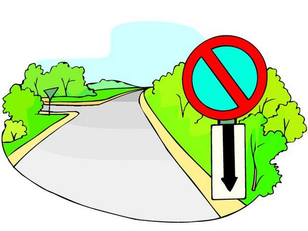

Welcome to the FTDA
here at the FTDA (fake teen driving assosiation.) we are dedicated to the saftey of teens while driving on the road.
to help with this I created a image map located on the top of the site. if you want to know what the sign is just click on it.